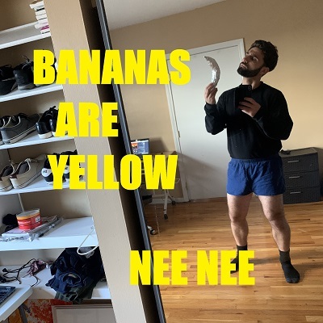
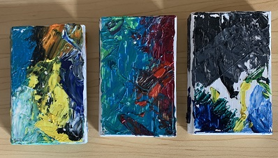

Cassettes
Press Release:
Providence rock band Nee Nee makes its debut with this concise audio cassette EP Bananas are Yellow. Called both 'a communist book club' and 'a revolutionary ear drum testing bistro' by certain members of the press, the band combines vocalist Nick Peri's primitive drumming (done on Stagg childrens' snares and toms) with his unique take on the tanka poem, an ancient metrical form of Japanese literature. In place of rock's traditional electric guitar, the band uses an analog mixer modulated to produce distortion, feedback, and drones that are then improvised into solos. This debut EP contains 7 of their songs in a succinct 6 minute run-time.
-Tom Brokah
Recorded at 1455 Mineral Spring Avenue Providence RI